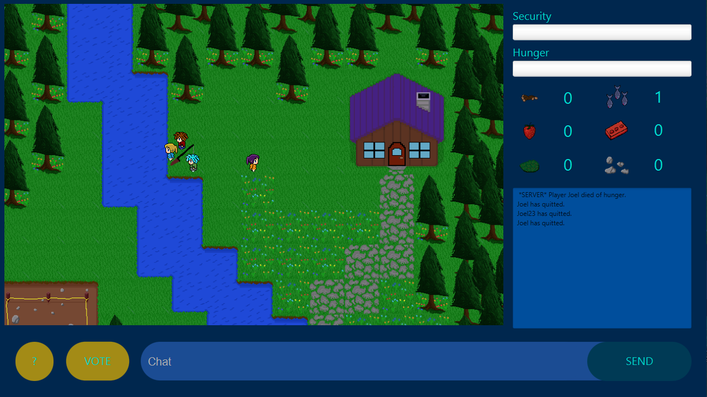

AmongAlien 2
Entlarve die Aliens und mache das Dorf aliensicher!Entwickler:
- Joël Erbsland
- Hamza Zarah
- Rayes Diyab

Trailer
Steuerung:
W, A, S, D: bewegenE: Task abschliessen
T: Task abfragen / Materialien aufnehmen
Mark-Button: Menschen markieren, welche im Radius des Aliens sind
Inventar:
Beerenbusch: Füllt Hunger auf und wird für Tasks benötigt.Erdbeere: Füllt Hunger auf und wird für Tasks benötigt.
Fisch: Erhält man durch Angeln. Füllt Hunger auf.
Holz: Wird für Tasks benötigt.
Lehm: Wird für Tasks benötigt.
Stein: Wird für Tasks benötigt.